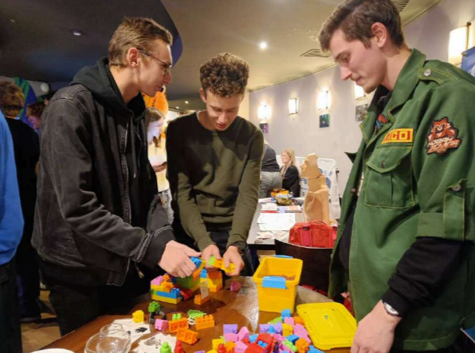
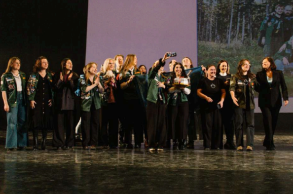

САНКТ-ПЕТЕРБУРГСКОЕ РЕГИОНАЛЬНОЕ ОТДЕЛЕНИЕ МОЛОДЕЖНОЙ ОБЩЕРОССИЙСКОЙ ОБЩЕСТВЕННОЙ ОРГАНИЗАЦИИ «РОССИЙСКИЕ СТУДЕНЧЕСКИЕ ОТРЯДЫ»
Проект является комплексом мероприятий по развитию студенческих отрядов Санкт-Петербурга из числа студентов вузов и ссузов к работе в период летнего трудового сезона, включающий в себя:
- теоретическую и практическую подготовку руководителей студенческого отряда, а также переподготовку руководителей среднего и высшего звена (руководителей штабов студенческих отрядов образовательных организаций и руководителей направлений);
- профессиональную подготовку участников студенческих отрядов по основным специальностям: «вожатый», «проводник пассажирского вагона», «мастер отделочных работ», «мастер общестроительных работ» и др.;
- сплочение участников трудовых коллективов в течение года;
- обеспечение участников студенческих отрядов необходимой символикой и атрибутикой (знаками отличия);
- трудоустройство в период летнего трудового сезона;
- агитационная кампания.
 Количество благополучателей: 3250 человек.
Количество волонтеров: 35 человек.